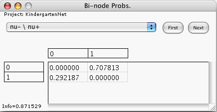

This window displays the joint probability distribution of the bi-node whose name appears on the face of the window's popup. The window displays this distribution for the latest e-case analyzed by the computer.
The popup of this window lists only those bi-nodes that were listed earlier in the Bi-nodes Of Interest window.
For the bi-node selected in the popup and for the latest e-case,
None of the entries of this table can be edited directly by the user.